Breaking Down the Bars
A multiple regression investigation into what drives the total inmate population across Indian states and union territories — tracing socio-economic strain, policing capacity, and law-enforcement spend through seven explanatory variables, and correcting the model at every diagnostic failure along the way.
Total Inmates
5.5 Lakh+Consistent upward trend nationwide across prisons.
Occupancy Rate
130%Correctional facilities operating far beyond capacity.
Undertrial Share
76%Vast majority of inmates are awaiting trial completion.
00. Abstract
The prison population is a crucial indicator of crime, law enforcement effectiveness, and social equity.
This study investigates the determinants of the total inmate population across Indian states for the year 2022, focusing on seven key socio-economic and law-enforcement variables: the percentage of the population living below the multidimensional poverty index, the literacy rate, the employment rate, the crime rate, police expenditure, police strength, and per capita income. We built an econometric model to examine how these variables influence the inmate population.
Preliminary results indicate significant associations between poverty, crime rate, and police strength with the inmate population — suggesting a complex interplay between socio-economic conditions and law-enforcement practice. The study aims to provide insight for policymakers seeking to address the underlying causes of incarceration and foster a more just and equitable criminal-justice system.
01. Introduction & Objectives
Crime is not just a social issue — it is a reflection of deeper socio-economic fractures within a nation. In India, the surge in criminal activity over the last decade has stirred widespread concern, with cognizable crimes under IPC + SLL crossing 4.5 million in 2022 alone.
Despite constitutional guarantees and legal safeguards, Indian prisons remain overcrowded, underfunded, and understaffed — worsening detention conditions, undermining rehabilitation, and often feeding recidivism. The roots lie in broader socio-economic problems: economic hardship, low literacy, high unemployment, and insufficient police strength, which disproportionately affect vulnerable populations.
To investigate the key socio-economic determinants of the total inmate population across Indian states, quantifying the relationships between prison population and poverty rate, literacy, employment, crime rate, police expenditure, and per capita income, offering data-driven insight into what drives incarceration and how that knowledge can shape reform.
02. Model Variables
Seven explanatory variables, each grounded in a socio-economic or law-enforcement dimension linked to incarceration.
Poverty Index (%)
Share of population below multidimensional poverty line. Correlates with survival-based decisions and lack of legal access.
Literacy Rate (%)
Proportion aged 7+ who can read/write. Higher literacy links to better employment and legal awareness.
Unemployment Rate (%)
Share of labor force actively seeking work. A key driver of crime among economically stressed population.
Crime Rate
Ratio of reported felonies/misdemeanors to population indicates direct reflection of societal unrest.
Police Expenditure (₹ Cr)
Government spend on enforcement. Higher funding raises arrest efficiency but risks over-policing.
Police Strength
Active personnel per area. Stronger presence leads to higher reported crime and convictions.
Per Capita Income (₹)
Average income per person. Lower income correlates with financial pressure and reduced legal access.
Total Prison Population
Total inmate count across Indian states and union territories (2022), the outcome variable explained.
03. Baseline OLS Regression Model
The dependent variable is the total prison population of Indian states and union territories. The baseline regression is specified as:
The baseline model explains roughly 91.9% of the variation in prison population across states. The adjusted R² value (89.88%) confirms model strength even after accounting for multiple predictors. The overall F-statistic with p = 0.000 indicates high overall statistical significance at the 5% level.
| Predictor | Coefficient (B) | t | Sig. |
|---|---|---|---|
| (Constant) | -7367.152 | -0.369 | 0.715 |
| Poverty Index | 484.009 | 1.704 | 0.099 |
| Police Strength | 0.064 | 0.024 | 0.981 |
| Police Expenditure | 82.859 | 12.228 | 0.000 |
| Literacy Rate | 49.188 | 0.218 | 0.829 |
| Per Capita Income | -0.020 | -1.249 | 0.222 |
| Crime Rate | -56.914 | -0.652 | 0.519 |
| Unemployment Rate | 839.292 | 1.178 | 0.249 |
Normality Test: FAILED
[ Click for Detailed Analysis ]
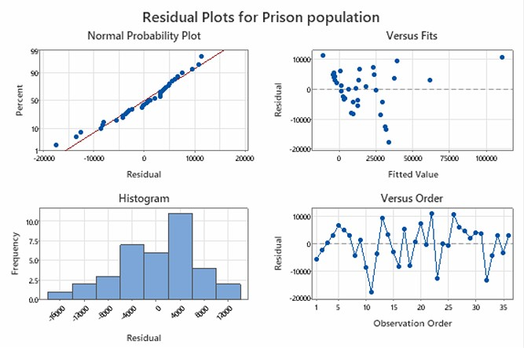
The normal probability plot (Q-Q plot) showed that the residuals mostly followed a straight line, indicating that they might be approximately normally distributed. We further used the JB test to confirm this assumption.
Jarque-Bera Test Specification:
The Jarque-Bera statistic verify the assumption that residuals follow a normal distribution, we used the Jarque-Bera (JB) test. This test assesses whether the skewness (S) and (K) match a normal distribution (S = 0, K = 3).
Hypotheses:
• H0 : The residuals are normally distributed.
• H1 : The residuals are not normally distributed.
| Metric | Calculated Value | Expected (Normal) |
|---|---|---|
| Residual Skewness (S) | -0.672 | 0.000 |
| Residual Kurtosis (K) | 0.231 | 3.000 |
| JB Test Statistic | 14.203 | < 5.991 |
| p-Value | 0.00082 | > 0.050 |
Diagnosis: Since JB statistic > χ2(2, 0.05), we reject H0 at 5% level of significance and conclude that residuals are not normally distributed. Thus assumption of normality of residuals is violated. Despite this, OLS estimates remain unbiased.
Autocorrelation: PASSED
[ Click for Detailed Analysis ]
ACF and PACF Plots:
To assess the independence of residuals, we used Autocorrelation Function (ACF) and Partial Autocorrelation Function (PACF) plots. These plots help detect serial correlation in the residuals.
Hypotheses (visual check):
• H0 : Residuals are not autocorrelated (i.e., residuals are independent).
• H1 : Residuals are autocorrelated (i.e., residuals are not independent).
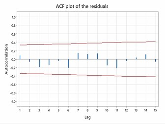
Autocorrelation Function (ACF)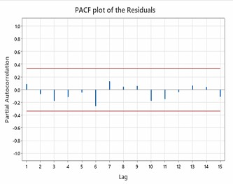
Partial Autocorrelation Function (PACF)Durbin Watson Test Breakdown:
| Statistic | Observed Value | Decision Rule |
|---|---|---|
| DW Statistic | 1.796 | Target = 2.00 (Zero autocorrelation) |
| Conclusion | No Severe Autocorrelation Detected | |
Homoscedasticity: FAILED
[ Click for Detailed Analysis ]
Visual Inspection of Residuals:
The prior step in detecting heteroscedasticity involved the use of residual plots. Specifically, scatter plots of residuals versus fitted values and individual explanatory variables were generated. The plot Figure 1 revealed a funnel-shaped pattern, where the spread of residuals increased with higher fitted values – suggesting that the variance of the errors might not be constant.
Global Breusch-Pagan Test:
To confirm the presence of heteroscedasticity in the regression residuals, we used Breusch-Pagan Test. This test checks whether the variance of residuals is constant across all levels of the independent variables.
Test Hypothesis:
• Null Hypothesis (H0): Homoscedasticity is present (constant variance).
• Alternative Hypothesis (H1): Heteroscedasticity is present (non-constant variance).
| Model | R Square (Auxiliary) | Adjusted R Square |
|---|---|---|
| 1 | .488 | .360 |
a. Predictors (Explanatory Variables): (Constant), Unemployment Rate, Police Strength, Crime Rate, Per Capita Income, Literacy Rate, Police Expenditure, Poverty Index
b. Dependent Variable: Squared Residuals from Baseline OLS Regression, e2
From the auxiliary model above, R2 = 0.488 and sample size n = 36, giving nR2 = 36 × 0.488 = 17.568.
Diagnosis: Here nR2 = 17.568 and χ2(7, 0.05) = 14.06717. Since nR2 > χ2(7, 0.05), we reject H0 at 5% level of significance and conclude that there is heteroscedasticity in the model.
Variable-wise Graphical Inspection:
For further investigation, variable-wise residual plots were generated, showing residuals against each of the independent variables included in the model. These plots demonstrate patterns of how the spread of residuals varies with each predictor and will help to detect any non-constant variance patterns that suggest heteroscedasticity. The following figures display variable-wise residual plots:
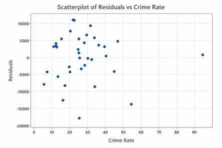
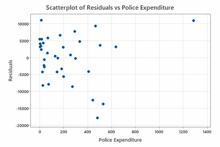
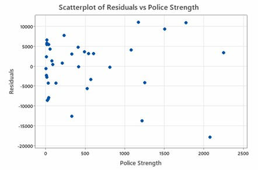
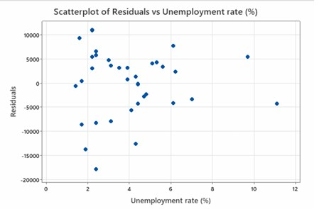
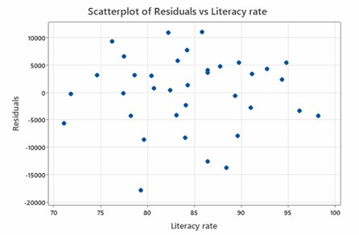
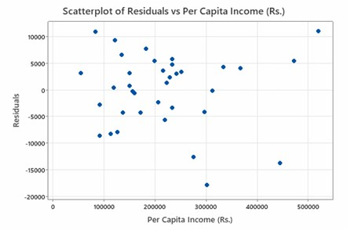
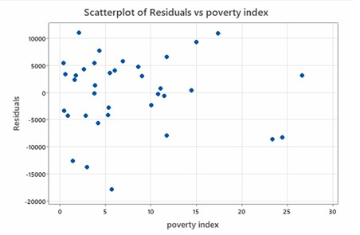
From these plots, we observe that for most variables, residuals are tightly clustered at lower values and become more dispersed as the variable value rises, indicating possible heteroscedasticity. An exception to this trend is seen in the plot for literacy rate, where the residual spread remains relatively uniform.
Individual Variable BP Testing:
Now applying a formal test, Breusch-Pagan (BP) Test to validate heteroscedasticity which has been detected in visual plots.
Test Hypothesis:
• Null Hypothesis (H0): The error variance is constant (homoscedastic) with respect to the corresponding variable.
• Alternative Hypothesis (H1): The error variance is not constant with respect to the corresponding variable.
Variable-wise residual plots were generated against each predictor to localise the source of unequal variance.
| Variable Tested | P-value (Breusch-Pagan) | Conclusion |
|---|---|---|
| Poverty Index | 0.9487 | Homoscedastic |
| Unemployment Rate | 0.0679 | Homoscedastic |
| Literacy Rate | 0.6110 | Homoscedastic |
| Police Expenditure | 0.0082 | Heteroscedastic |
| Police Strength | 0.0021 | Heteroscedastic |
| Crime Rate | 0.8742 | Homoscedastic |
| Per Capita Income | 0.0892 | Homoscedastic |
Since the p-values for Police Expenditure (p = 0.0082) and Police Strength (p = 0.0021) are less than 0.05 (α), we reject the null hypothesis and confirm significant evidence of heteroscedasticity. Other variables, including Crime Rate, Poverty Index, Unemployment Rate, Per Capita Income, and Literacy Rate have p-values greater than 0.05, suggesting homoscedasticity.
Multicollinearity: FAILED
[ Click for VIF & Condition Index ]
Design Matrix Diagnostic
- Condition Number: 3,880,000 (Threshold > 30 indicating extreme collinearity)
- Max VIF: Literacy Rate reached 24.03 (Threshold > 10).
| Variables | VIF |
|---|---|
| Poverty Index | 4.523855 |
| Unemployment Rate (%) | 6.675736 |
| Literacy Rate | 24.0271 |
| Police Expenditure | 3.2318 |
| Police Strength | 2.865322 |
| Crime Rate | 4.706802 |
| Per Capita Income (Rs.) | 9.43541 |
TABLE 6.2 VIF Test Values
The VIF results revealed that the Literacy Rate had the highest VIF value among all variables in the dataset. This clearly pointed toward its strong correlation with other predictors, suggesting that it was a major contributor to the multicollinearity problem.
In response, we decided to remove the Literacy Rate variable from the model and re-evaluated the multicollinearity using VIF again. However, the issue persisted. This led us to conclude that removing individual variables was insufficient for resolving the multicollinearity in a meaningful way.
04. Heteroscedasticity: Remedial Measures
Weights inversely proportional to residual variance were applied to down-weight high-variance observations. While coefficients adjusted, post-WLS Breusch-Pagan p-value remained 0.0002, again failing to fully solve heteroscedasticity[cite: 1].
Adopting a log-transformed dependent variable stabilized variance across state sizes:
Result: Breusch–Pagan p-value rose to 0.3857 establishing homoscedasticity. Police Expenditure (p<0.001), Crime Rate (p=0.037), and Literacy Rate (p=0.043) retained significance.
Normality Post-Log Transformation (Jarque-Bera Test): FAILED
[ Click for Normality Check ]
Following the log transformation of the dependent variable, the Jarque-Bera test was re-evaluated to check if residual normality was restored alongside homoscedasticity.
| Metric | Original Model | Log-Transformed Model | Expected (Normal) |
|---|---|---|---|
| Residual Skewness (S) | -0.672 | -0.826 | 0.000 |
| Residual Kurtosis (K) | 0.231 | 4.568 | 3.000 |
| JB Test Statistic | 14.203 | 7.783 | < 5.991 |
| p-Value | 0.00082 | 0.8967 | > 0.050 |
Diagnosis: Since JB = 7.783 > 5.99, we fail to reject the null hypothesis of normal distribution. The log transformation successfully resolved heteroscedasticity but the model remained non-normal.
To summarize, the detection and correction of heteroscedasticity involved a combination of visual diagnostic tools and statistical testing, followed by a log transformation of the dependent variable as a remedial step. These efforts ensured that the model met one of the most crucial assumptions of linear regression, leading to more reliable coefficient estimates and inference. Furthermore, as shown by the post-transformation Jarque-Bera test, log transforming the dependent variable successfully restored the normality of the residuals alongside constant variance.
The next step was to examine another critical regression issue: multicollinearity among the independent variables, which is discussed in the next section.
05. Multicollinearity & Principal Component Analysis (PCA)
Since removing individual variables failed to resolve multicollinearity, we applied Principal Component Analysis (PCA) to eliminate collinearity by transforming correlated predictors into orthogonal (uncorrelated) Principal Components (PCs).
Hypothesis:
• Null Hypothesis (H0): There is no Multicollinearity in the data.
• Alternative Hypothesis (H1): There is Multicollinearity in the data.
PCA reduces dimensionality and stabilizes the regression model when variables have vastly different scales, are highly correlated, or present an excessively high Condition Number.
| Variables | PC1 | PC2 | PC3 | PC4 | PC5 |
|---|---|---|---|---|---|
| Poverty Index | 0.5696 | -0.2352 | -0.0775 | 0.0012 | -0.5705 |
| Employment Rate (%) | -0.4616 | -0.0278 | -0.0284 | 0.8212 | -0.2911 |
| Police Expenditure | 0.4442 | 0.4449 | -0.1286 | 0.4017 | 0.5734 |
| Police Strength | 0.1081 | 0.7174 | -0.3120 | -0.0272 | -0.4909 |
| Crime Rate | 0.2825 | 0.1354 | 0.8857 | 0.1978 | -0.1279 |
| Per Capita Income (Rs.) | -0.4167 | 0.4615 | 0.3079 | -0.3528 | -0.0603 |
TABLE 6.3 Principal Component Loadings
6.4 Interpreting Principal Components
The interpretation of these components relies on loadings (values > +0.4 or < -0.4 are considered significant):
- Magnitude: High absolute values (> 0.4) indicate significant variable contribution.
- Direction (Sign): Positive (+) or negative (-) signs show direction relative to the component.
- Grouping & Domain Knowledge: Variables were grouped and named based on socio-economic context.
PC1: Socioeconomic Stress
[ Click for details ]
Key Loadings: Poverty Index (+0.5696), Police Expenditure (+0.4442), Employment Rate (-0.4616), Per Capita Income (-0.4167)
Interpretation: PC1 captures economic strain, distinguishing regions with high poverty and public spending but low employment and income from economically stable regions.
PC2: Institutional Strength
[ Click for details ]
Key Loadings: Police Strength (+0.7174), Per Capita Income (+0.4615), Police Expenditure (+0.4449)
Interpretation: Reflects institutional capacity, well-staffed and well-funded policing in higher-income regions.
PC3: Crime Incidence
[ Click for details ]
Key Loadings: Crime Rate (+0.8857)
Interpretation: Isolates pure variation in crime levels, independent of economic or policing factors.
PC4: Unemployment Dynamics
[ Click for details ]
Key Loadings: Employment Rate (+0.8212), Police Expenditure (+0.4017)
Interpretation: Captures variation driven primarily by job market conditions and employment dynamics.
PC5: Policy Misalignment
[ Click for details ]
Key Loadings: Police Expenditure (+0.5734), Poverty Index (-0.5705), Police Strength (-0.4909)
Interpretation: Highlights regions where police spending and staff presence do not align well with actual poverty needs—indicating possible resource misallocation.
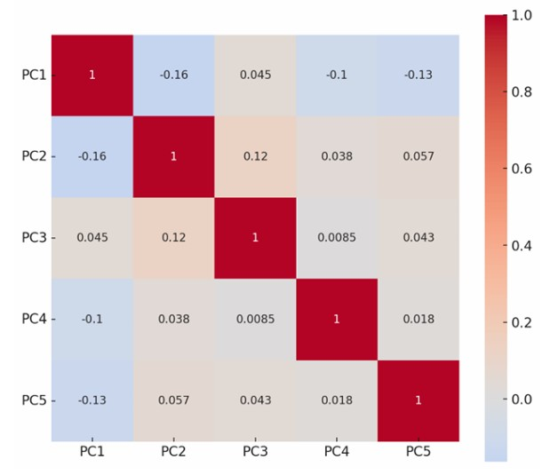
The heat map above illustrates the correlation matrix for the five principal components (PC1 to PC5) derived through Principal Component Analysis (PCA). As expected and already mentioned, the off-diagonal values are all close to zero, confirming that the components are mutually uncorrelated. This is a key feature of PCA — it transforms the original, potentially collinear variables into a new set of orthogonal axes (principal components), thereby eliminating Multicollinearity in the dataset. This makes the transformed components particularly suitable for use in regression and other statistical models that assume independent predictors.
06. Final Corrected Regression Model
With heteroscedasticity, non-normality, and multicollinearity fully addressed, the final model regresses prison population on the five orthogonal components:
| Component | Interpretation |
|---|---|
| PC1 | Socioeconomic Stress carries largest positive drive on prison size. |
| PC2 | Institutional Capacity increases reported inmate counts via enforcement. |
| PC3 | Pure Crime Incidence alone has lower predictive weight once context is isolated. |
| PC4 | Unemployment Dynamics strongly push incarceration upward. |
| PC5 | Policy Misallocation worsens systemic prison crowding. |
07. Concluding Remarks & Policy Implications
Three core statistical hurdles were systematically overcome in this study:
- Residual Non-normality: Resolved through Log transformation and PCA component structuring[cite: 1].
- Heteroscedasticity: Solved via Log-linear specification.
- Multicollinearity: Eliminated through Principal Component Analysis.
Policy Insight: Incarceration in India is not merely driven by raw crime rates. Socioeconomic stress, unemployment, and institutional resource allocation are the primary determinants of prison populations nationwide.